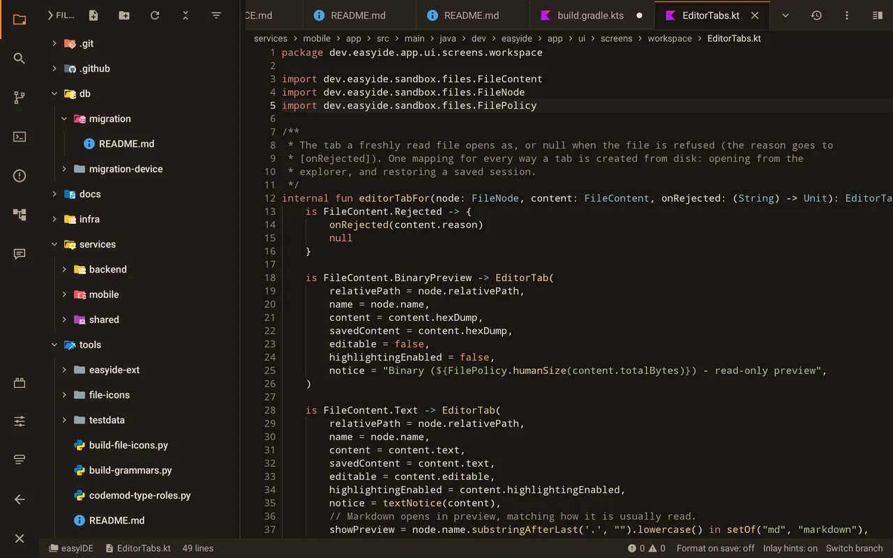
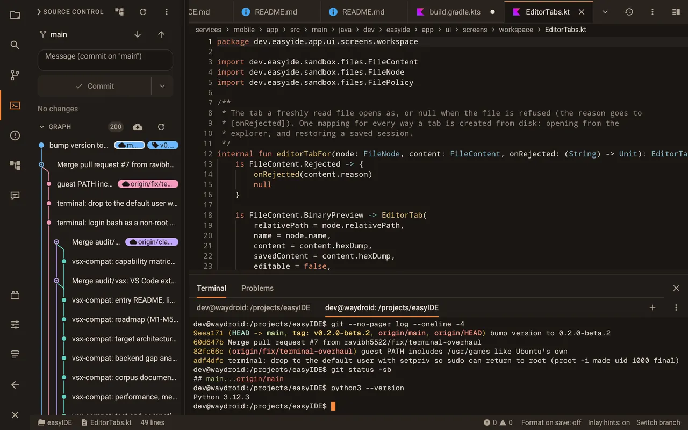
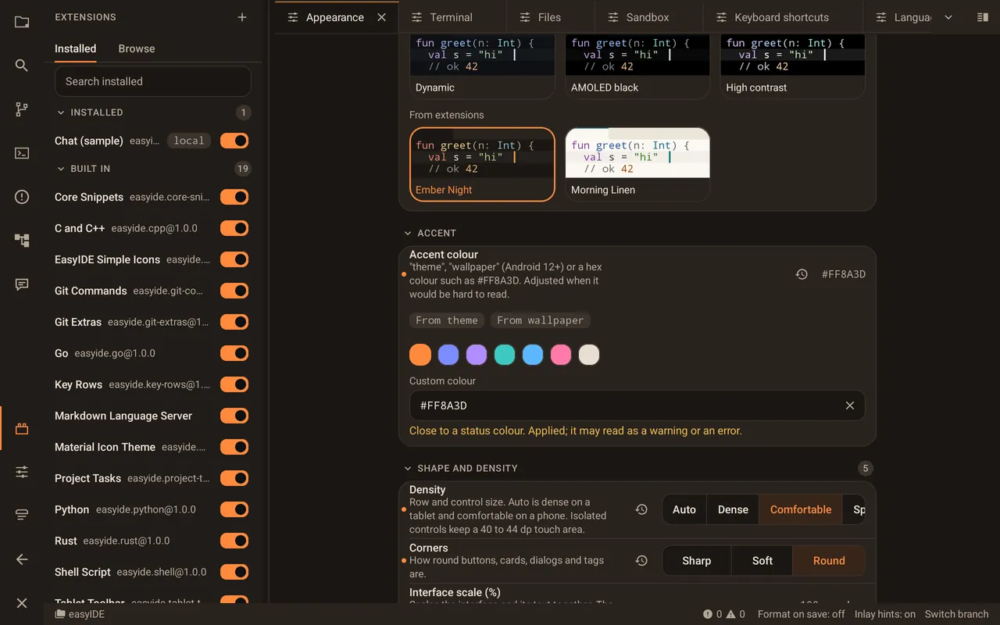
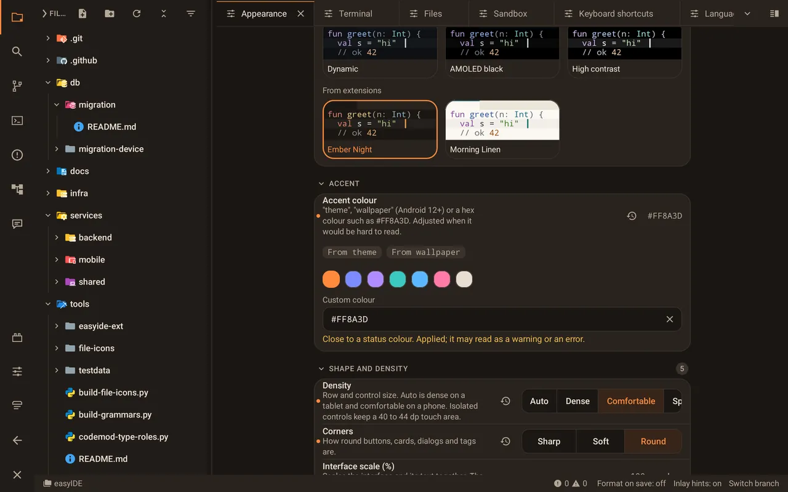

easyIDE
IDE and code editor
for Android tablets
- Real Ubuntu terminal, no root
- Language servers + git
- Free & open source (AGPL-3.0)
- Android 8.0+
- Works offline
- No account
An Android IDE, not a snippet editor
Real Linux terminal
Ubuntu runs in app storage through PRoot, no root needed. apt-get install works, full-screen programs render, tabs keep their scrollback.
Code editor with language servers
Syntax highlighting for 229 languages with VS Code's TextMate grammars, plus completion, diagnostics, rename and go-to-definition for Python, TypeScript, Rust, Go, C/C++ and more.
Git built in
Stage, commit, amend, branch and tag, with a VS Code-style history graph. Clone, pull and push from the terminal or the source control view.
Python, Node.js and build tools
Pick a preset environment and it arrives with its toolchain. Run Node LTS, npm and CLI tools such as Claude Code right on the tablet.
Made for tablets, works on phones
Activity rail, split editors and a bottom panel on a tablet; bottom navigation on a phone. Keyboard and mouse friendly.
Free and open source
AGPL-3.0, offline-first, no account. Extensions add languages, themes, icons, snippets and language servers.
How it runs Linux without root


Code like you would on a laptop
A dense, VS Code-shaped workspace with split editor groups, breadcrumbs and file-type icons.
- 229 languages highlighted offline
- Completion, hover, diagnostics and rename from real language servers
- Activity rail, side bar and bottom panel on a tablet


Git and a real terminal, side by side
The history graph, staging and commits next to an Ubuntu terminal running the same repository.
- Branch and tag chips, cherry-pick, checkout, compare
- Multiple terminal tabs with an Esc/Ctrl key row
- Changes from the terminal show up in source control


Extend it
Declarative packs add what you need, with capability disclosure before install.
- Language packs install their own language server
- Themes, icon themes, snippets, keybindings and panels
- VS Code icon themes from Open VSX install as is


Make it yours
Themes, accent colours and density that adapt from a phone to a large tablet.
- Dark, light, AMOLED and high-contrast themes
- Your own accent colour, or one from the wallpaper
- Three density levels and rounded or sharp corners
Tour
Built in the open
Top contributors
live from GitHubCommit activity
live, last 12 monthsCommunity
Scan the code or tap the button to chat, ask questions and report rough edges. easyIDE is in beta.
Join on Telegram